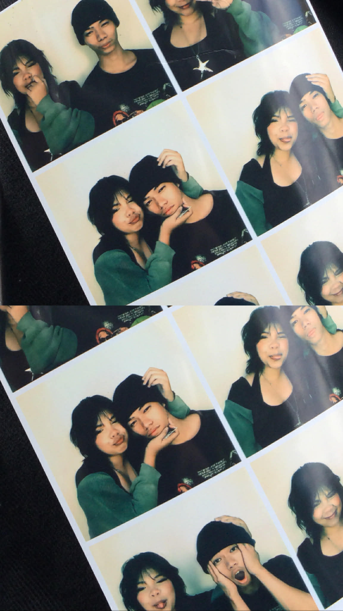
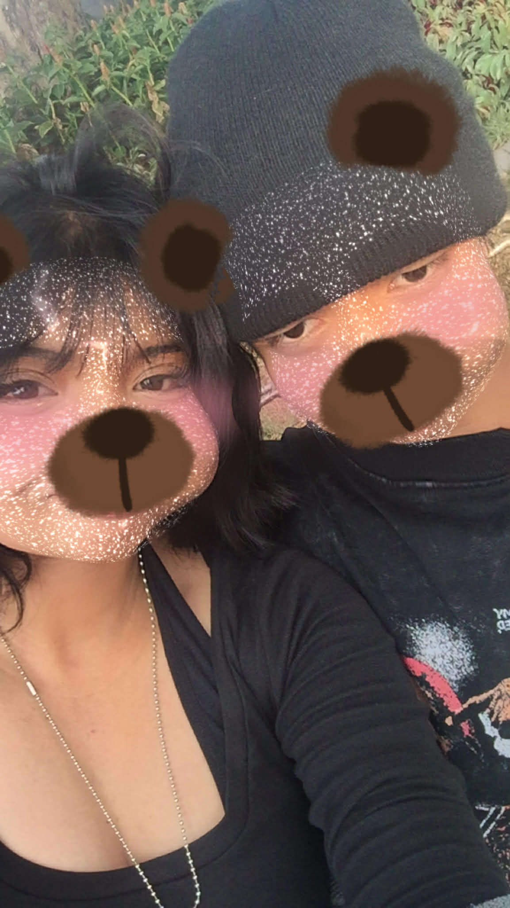

Having you is the most unexpected thing that has happened to me, yet it is the happiest and the brightest thing of all. You don't know how I pray for this thing between the two of us to last, and how much I want you to be my last. Most people would leave and get disappointed when their relationship is very hard and confusing, or when they already see the bad things in their partner. But as for me, the more I know you, the more I love you. I may sometimes doubt you because of traumas you didn't even cause, and I'm really sorry for that. There may be times when I am confused, or when I don't feel your love when I need it most, but it’s just because I don't want to lose myself, for you. Hindi ko kayang makita ka sa ibang tao na hindi ka kayang pakinggan at intindihin.
Hindi ko kayang makita ka sa ibang tao na hindi ka kayang pakinggan at intindihin. Mahal kita Jam, walang nagbago.
Truly Yours, Thea

